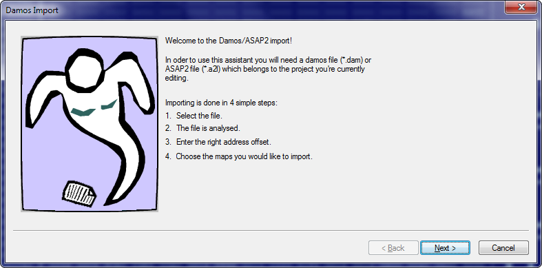
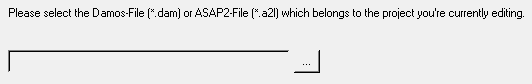
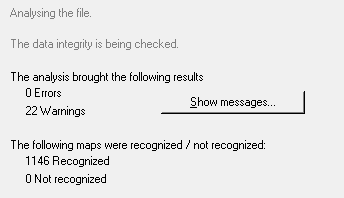
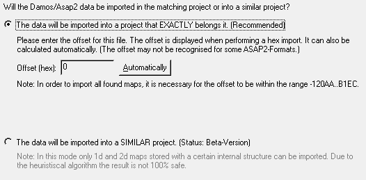
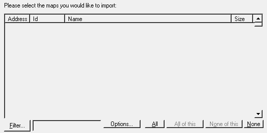
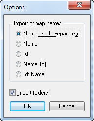
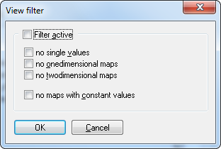

|
The command Damos & A2L Import (Menu Project) |

  
|
|
The command Damos & A2L Import (Menu Project) |
|
Note: This command is not part of the WinOLS main program. It is an additional module and must be licensed separately.
You may also start this assistant by dragging a Damos or ASAP2 file into a project window. In this case the first two dialogs will be skipped.

This assistant will guide you through the import of Damos or ASAP2 files. Before starting it you should open a matching project file or create a project by importing the matching files, because this assistant always relates to the currently active project. The project data must match exactly the Damos or ASAP2 file, since the import may otherwise be incomplete or erroneous. If you want to use the maps in a different project, you should first import them into the matching project and then transfer them with the function 'Import changes' into your desired project.

In the first step, you must select the Damos or A2L file that you want to import. This step is skipped if you drag and drop the Damos/A2L file into the project.

In the second step the file is analysed. The data will be read and stored into and internal format. Since the file formats are different and not all elements are properly document warnings and errors may be displayed. They won’t necessarily disturb the import and should be ignored if they’re small in numbers.

In the third step, the offset is determined, as the addresses in the Damos/A2L file do not always match the project. Sometimes they are shifted.
If your project has elements with addresses, it is usually sufficient to use these. However, if your project starts at 00000 because it was created from a bin file, you often have to enter an offset manually.
Manual offset:
The importer will try to guess the offset automatically based on the maps. You can also start this with the "Automatic" button. If this does not work, you will have to enter the offset manually. Unfortunately, there is no clear way to determine it. WinOLS shows you the addresses in which the maps are located. From this you can estimate / try out what the correct offset is so that the addresses are within the address range of the hex dump after the calculation. The ComboBox can suggest some "typical" values.
The importer allows you to enter 2 offsets (minus and plus) to make the calculation easier for you. If, for example, the maps in the A2L file are from 0x8000.0000, but in the hex dump from 0x10.0000, you can enter 0x8000.0000 as a negative offset and 0x10.0000 as a positive offset.
If there is no uniform offset that works for all maps, this is usually due to the fact that A2L + hexdump do not match. An import is then not possible.
Lower radio button
With some old files, the importer can try to assign the maps to the project, even if the project only partially matches the file. Heuristics are sometimes used for the import, so the result is not 100% certain. Please check this before use.

As a last step you only have to select the maps you want to import. Since there may be a large number of files in a file, you may reduce the current view by using the button 'filter '. Then only files matching the defined criteria (see below) will be shown. Furthermore you may enter a search text. In this case only maps that contain the text will be shown. With the buttons 'all' and 'none' you may either select all maps or remove the entire selection. The buttons 'all of this' and 'none of this' do basically the same, but only influence maps that are currently visible. Maps that are hidden by the current filters are not influenced. Before finishing the import and transferring the maps into the main program you can use the 'options' button (see below) to configure details for the import.

With the options you may configure which data parts should be imported. Normally all maps have a descriptive name an a unique id. You may choose to import one of them, both combined or (since recently) both separately into the respective fields of WinOLS. Furthermore you may import the maps together with their folders in which they are organised into WinOLS.

With these filter options you can determine which maps should be shown in the view and which should be hidden. You can select maps you their dimension and by the fact if they consist of constant values only or not.
Shortcuts
Symbol bar: -
Keyboard: Ctrl+D